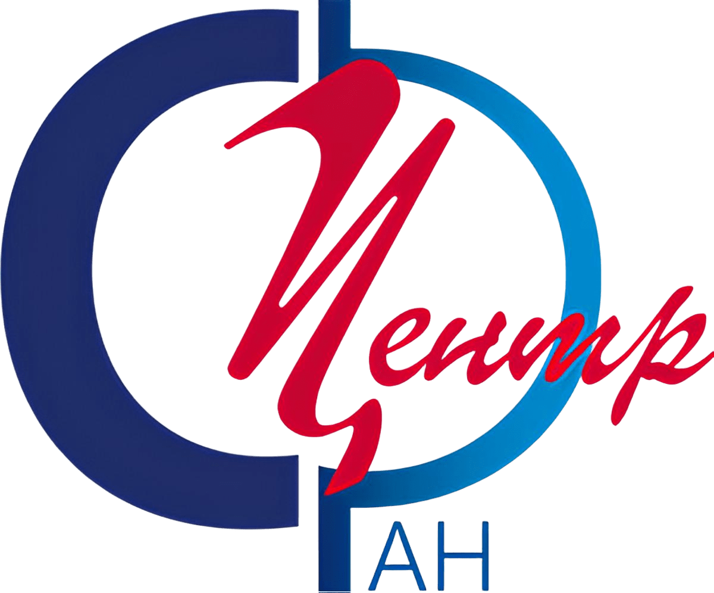
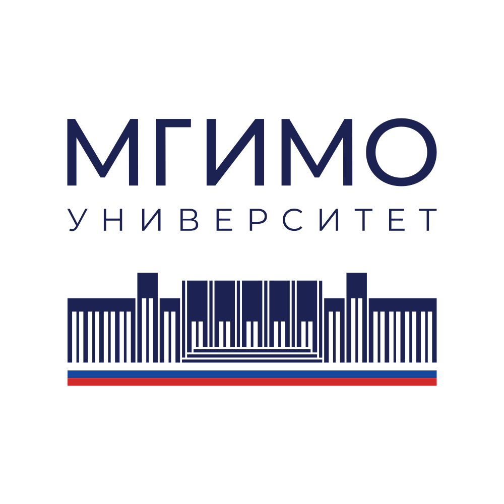
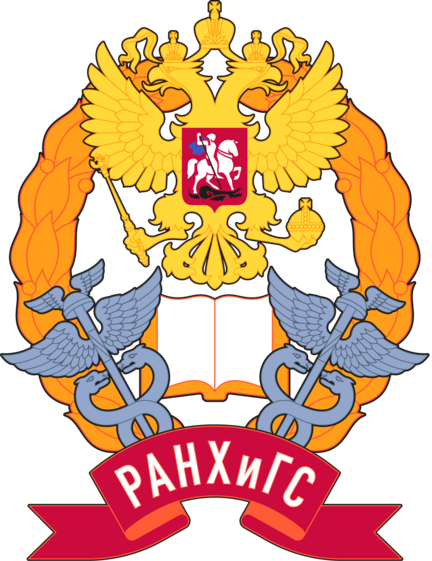

Курсы, лекции и практические занятия по государственному и муниципальному управлению, пространственной демографии, демографическим данным, геоинформационным системам и геоаналитике. Практика преподавания продолжается по настоящее время во ФНИСЦ, МГИМО, РАНХиГС и РУДН.
Courses, lectures and practice-oriented classes in state and municipal administration, spatial demography, demographic data, geographic information systems and geoanalytics. The teaching practice continues to the present at FCTAS RAS, MGIMO, RANEPA and RUDN University.



Курс лекций «Введение в специальность Государственное и муниципальное управление» для бакалавров Российского университета дружбы народов (РУДН) по специальности 38.03.04.
Lecture course “Introduction to State and Municipal Administration” for bachelor students of RUDN University in the 38.03.04 programme.
Для бакалавров Российского университета дружбы народов (РУДН) по специальности 38.03.04, 2024.
For bachelor students of RUDN University in the 38.03.04 programme, 2024.
Для магистрантов кафедры территориального планирования им. В.Л. Глазычева РАНХиГС, 2025.
For master students of the V.L. Glazychev Department of Territorial Planning at RANEPA, 2025.
Курс посвящён функционалу бесплатной российской ГИС, позволяющей создавать красочные и информативные карты с данными.
The course explains the functionality of a free Russian GIS for creating vivid and informative data maps.
Ниже перечислены программы и лекционные темы. Фактическая преподавательская работа по этим направлениям продолжается по настоящее время в институциональной связке ФНИСЦ, МГИМО, РАНХиГС и РУДН.
The programmes and lecture topics are listed below. Teaching in these areas continues to the present through FCTAS RAS, MGIMO, RANEPA and RUDN University.